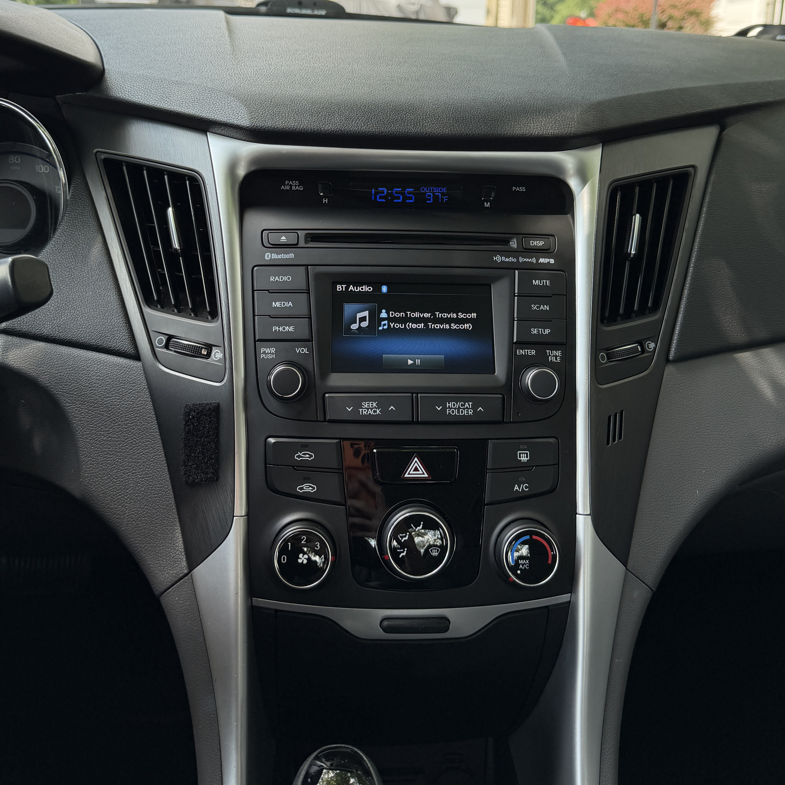
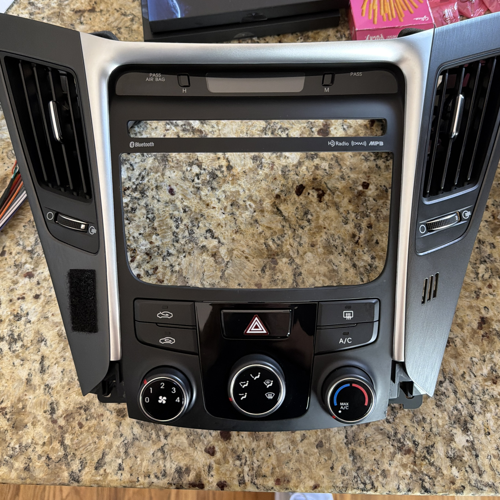
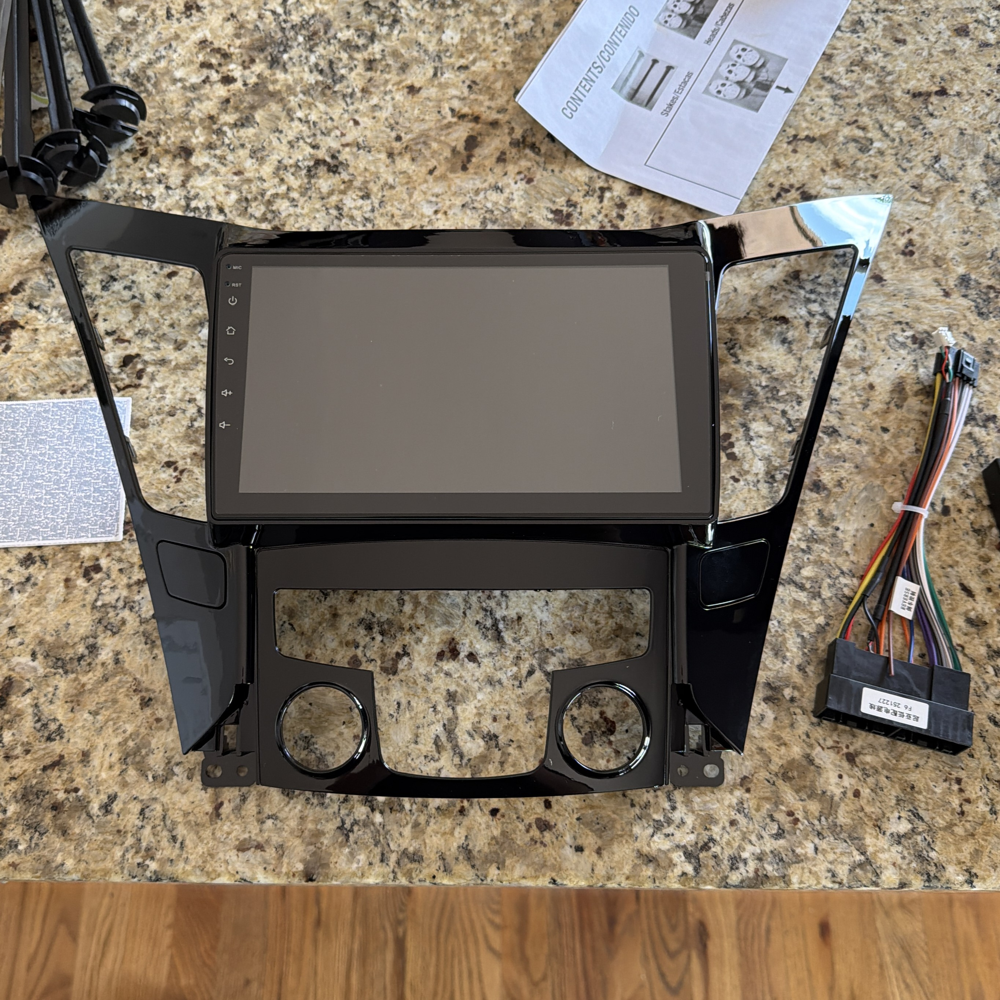
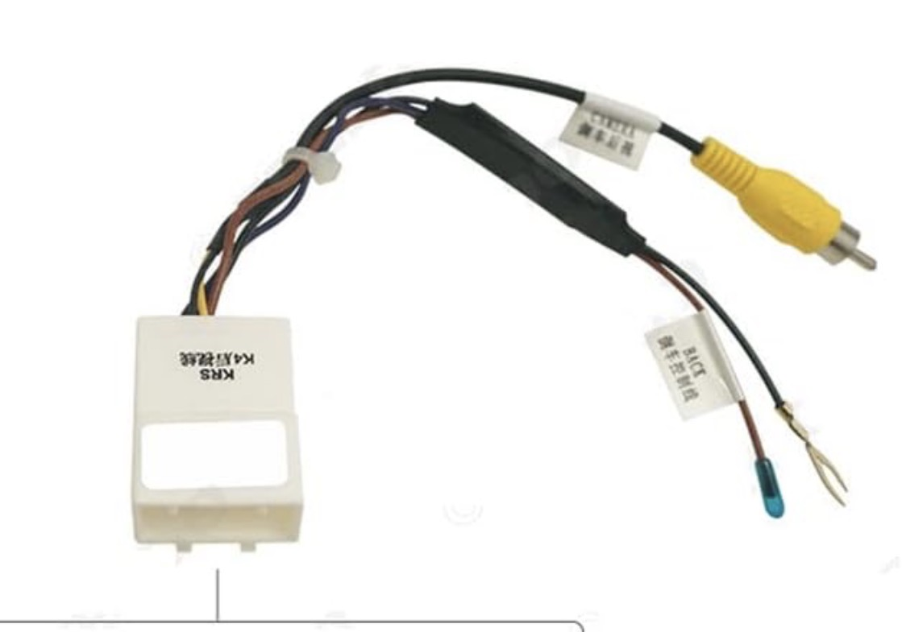
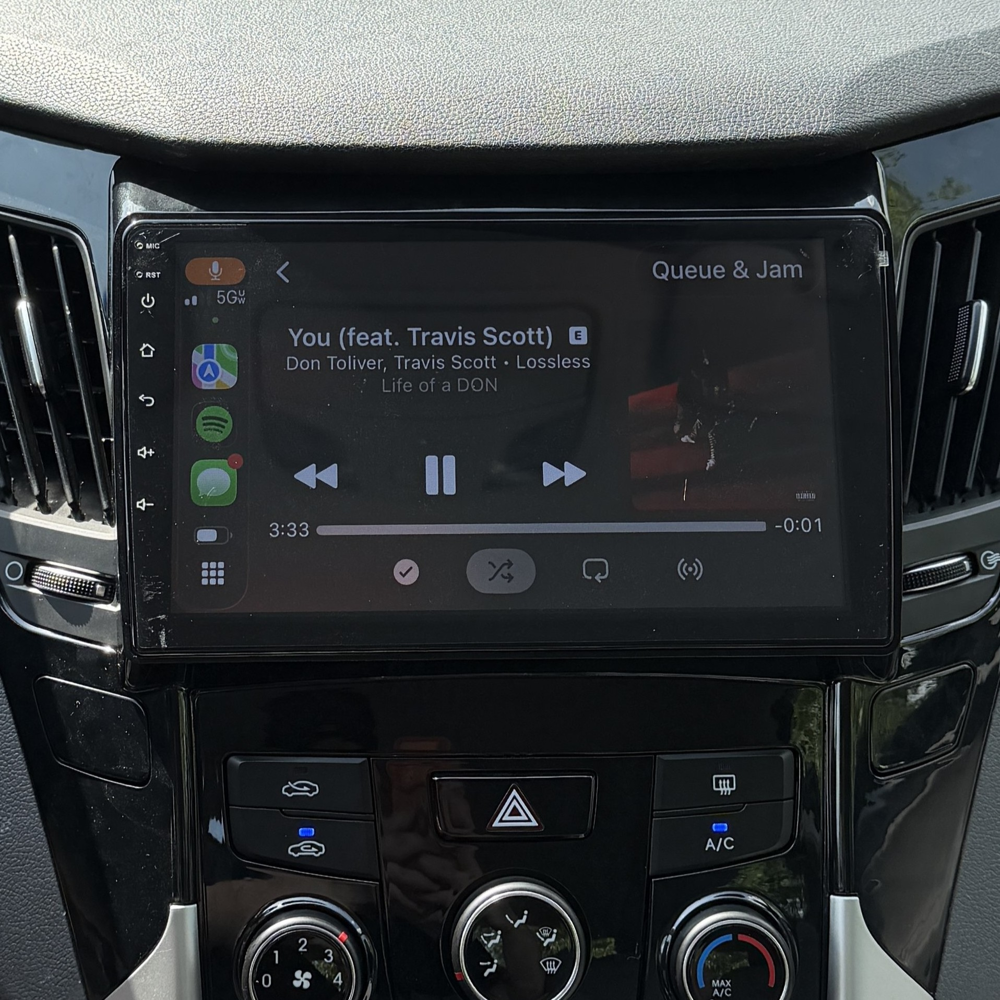
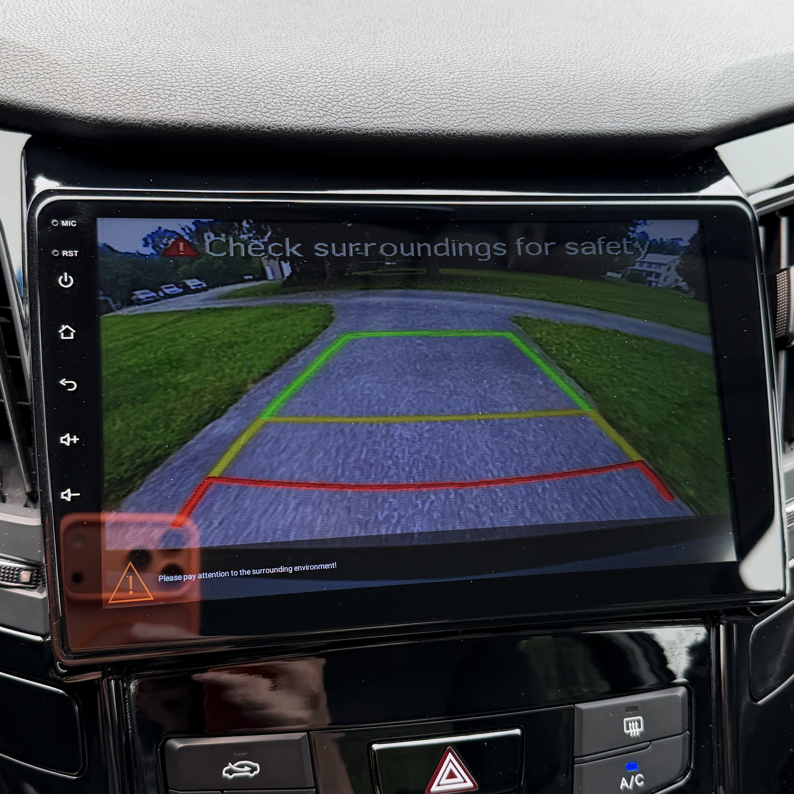

Since buying this car back in 2020, I always thought the radio unit was a little “dated” for a 2014. Mostly buttons, a small screen, knobs, all the basic radio stuff. It included a backup camera as well, so I had that going for me at least. Then what was the fuss about getting a new one? I wanted an upgrade: a bigger touch screen and wireless CarPlay.
Why do I want CarPlay? Perfect question. I love occasionally staring at album art at red lights! …just kidding. A bigger screen would really make the reverse camera more practical for me, and the unit I chose had other functions with it since it came preloaded with Android under the hood, like Bluetooth 5.0, local storage for music files, etc.
Let’s talk about the install, shall we?
The Sonata has many plastic trim pieces to it. This is what I’m working with:

The radio, AC vents, climate controls, and clock unit all come out as one. Thank you Korean engineering lol. Once I took some sails near the center console out, I was in and ready to pry. Who knew plastic clips could be such a pain in the ass. I swear, the factory added gorilla glue or something. Anyway, the trim was out and now I can swap some pieces over. Which are the vents and the climate controls.


What about the clock? Well, the new trim piece doesn’t have space for it, but Hyundai has the passenger airbag detection built in the clock unit…so I can’t necessarily get rid of it UNLESS I wanted the airbag light on my dash forever. So, what to do? “Just toss that in the back” as I shove it behind my new radio to be forgotten about until I reopen it back up.
Remember when I said my car came with a backup camera? Well, thanks to Korean engineering again, they use a proprietary 16-pin connector which requires an adapter to standard RCA video.

It was simple to install, given that all it needed was a proper ground to hook onto, and a cable to connect to the reverse trigger (that way it comes up automatically when thrown into reverse). Not a fan of crimping wires, but it works, and I’m not touching it until it breaks on its own.
Now that every connection is taken care of, and the new trim is all prepared, all that was left was to do reconnect the trim back to the dash! Here’s the unit powered up, and how the camera feed shows up in reverse:


Damn. That looks WAY better now! Considering this was my first ever car project, while still being mostly tech related, I am very satisfied with how this turned out. Here’s to more projects in the future!